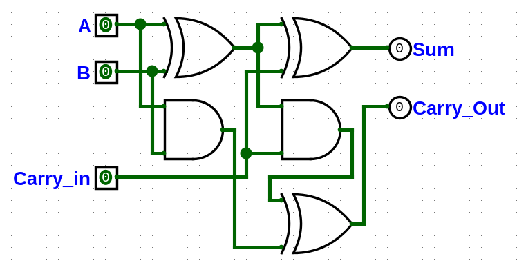
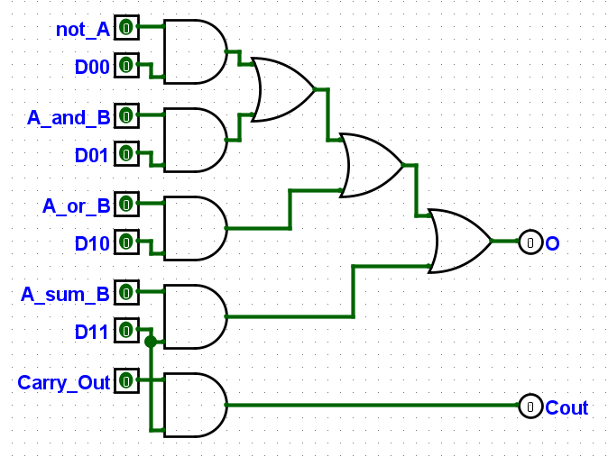
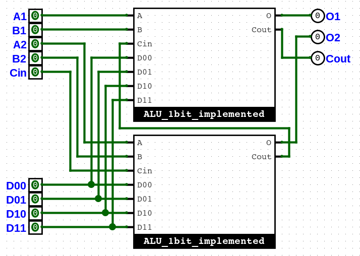
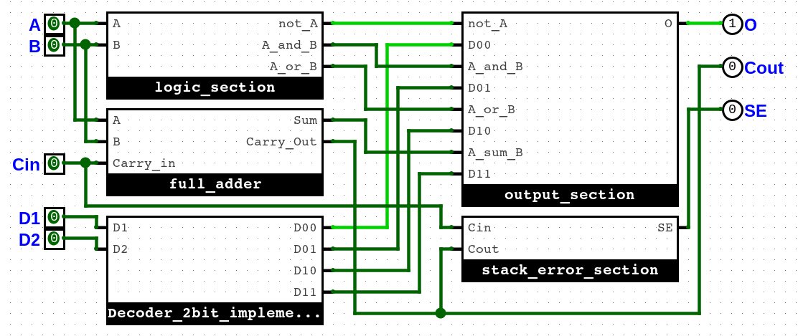

Decoder
Il decoder è un circuito che presi in input n controlli seleziona una delle 2^n righe sull output

Logic Section
La sezione logica riceve in input due variabili booleane e le combina attraverso le tre operazioni logiche base

Full Adder
Il sommatore completo riceve in input tre variabili booleane: due cifre più un riporto in entrata; resituisce
la loro somma e il riporto in uscita

Output Section
La sezione di output lascia passare soltanto il risultato selezionato compattando il tutto con una cascata di porte
or

1 Bit ALU
Un ALU ad un bit mette insieme tutti gli elementi visti prima, prende 5 variabili booleane in input: due cifre,
un riporto in entrata e due controlli del decoder; resituisce il risultato dell'operazione logica selezionata ed il riporto in uscita

2 Bit ALU
Un ALU a 2 bit mette semplicemente insieme due ALU ad un bit passando il carry in uscita della meno significativa
a quello in entrata della più significativa

Stack Error Section
La sezione di stack error controlla se l'ultimo e il penultimo riporto sono uguali, in tal caso l'operazione in
complemento a due ha restituito il risultato corretto, altrimenti non è possibile svoglere l'operazione su tal numero di bit

Most Significant Bit ALU
Per eseguire un operazione sulla cifra più significativa dei due numeri possiamo utilizzare un ALU con la sezione
di stack error integrata in modo da restituirci anche quello senza utilizzarne una esterna

8 Bit ALU
Un ALU ad 8 bit è semplicemente formata da 4 ALU a 2 bit, le quali sono costruite su 4 breadboard (una di esse,
la più significativa, contiene anche una sezione di stack error), prende in input: il carry in entrata, due numeri a 8 bit e due controlli
del decoder; e resituisce in output: un numero a 8 bit, il carry in uscita e lo stack error